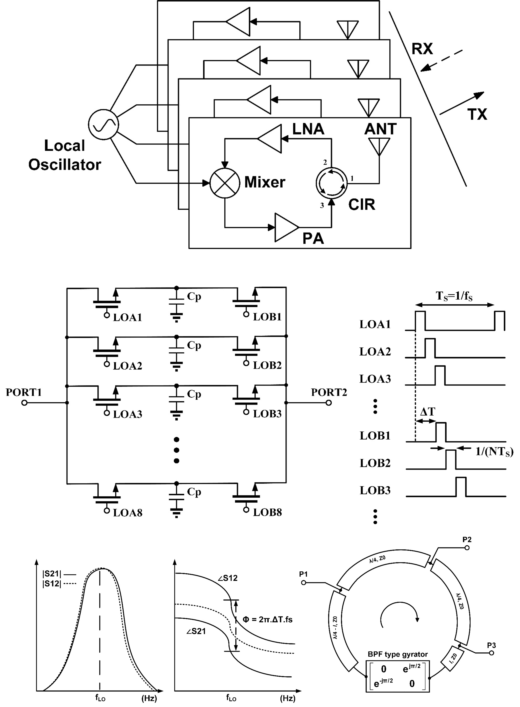

Circulator is a non-reciprocal device, which means it routes the signal in only one specific direction.
When a weak signal from the DUC arrives at the antenna (Port 1), it is directed to the receiver chain at (Port 2).
After conjugating and amplifying, a high-power signal is sent into Port 3 and directed back to the antenna via Port 1 for transmission toward the DUC.
That’s how the circulator enables retro directivity and duplex operation our system.
Originally, the N-path filter is a reciprocal device.
However,by applying relative phase shifts to the clock signals controlling the input and output switches — as shown in the switching waveforms here, we can create a nonreciprocal phase shift.
Developing on that nonreciprocal phase shift when applying a 90° phase delay between the two clock sets,
this will result in equal-magnitude, 180-degree phase shift different response which are the key characteristic of a gyrator.
To convert this phase nonreciprocity into directional signal flow, this gyrator can be embedded within a transmission line loop of 3λ/4.
As illustrated in this figure, by placing three port at λ/4 interval along the loop, a compact circulator can be realized.
Project Snapshot
Role:
Main Researcher.
Project Date:
2022.01 – 2023.01.
Technology:
Samsung LNRLPP 28nm RF CMOS Process.
Goal:
Design, simulate, and tape-out a retrodirective array for WPT system with non-magnetic circulator IC and other conventional blocks such as Mixer, LNA, PA, VCO... to make a complete SoC.
Tools:
Cadence Virtuoso, Keysight ADS, Ansys HFSS, Altium Designer.
Status:
Completed.
The Challenge
Circulator is a non-reciprocal device, which means it routes the signal in only one specific direction. Traditional circulator relies on ferromagnetic materials, which are costly, bulky and incompatible with integration. This motivates the need for a fully integrated solution. A promising approaches that have been studied in the recent years: the time-varying circuit. This method use time-modulated components to break symmetry in transmission and reception paths. They have potential of offering good performance, low cost, and are scalable with CMOS technology.
IC Design & Verification
